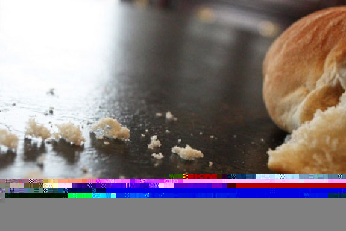

Leitura Orante
Leitura do dia
Quarta-feira da 18a Semana do Tempo Comum
(Verde – ofício do dia da semana)
5 de agosto de 2020
Leitura Orante do Evangelho
Ouça o áudio da oração e reflexão do padre Francisco das Chagas


Oração do dia
Manifestai, ó Deus, vossa inesgotável bondade para com os filhos e filhas que vos imploram e se gloriam de
vos ter como criador e guia, restaurando para eles a vossa criação e conservando-a renovada. Por Nosso
Senhor Jesus Cristo, na unidade do Espírito Santo.
Leitura: Jeremias 31, 1-7
1“Naquele tempo, diz o Senhor, serei Deus para todas as tribos de Israel, e elas serão meu povo”. 2Isto diz o Senhor: “Encontrou perdão no deserto o povo que escapara à espada; Israel encaminha-se para o seu descanso”. 30 Senhor apareceu-me de longe: “Amei-te com amor eterno e te atraí com a misericórdia. 4De novo te edificarei, serás reedificada, ó jovem nação de Israel; de novo teus tambores ornarão as praças e sairás entre grupos de dançantes. 5Hás de plantar vinhas nos montes de Samaria; os cultivadores hão de plantar e também colher. 6Virá o dia em que gritarão os guardas no monte Efraim: ‘Levantai-vos, vamos a Sião, vamos ao Senhor, nosso Deus’. 7Isto diz o Senhor: Exultai de alegria por Jacó, aclamai a primeira das nações; tocai, cantai e dizei: ‘Salva, Senhor, teu povo, o resto de Israel'”. – Palavra do Senhor.
Salmo Responsorial: 101 (102)
O Senhor nos guardará qual pastor a seu rebanho.
!
Ouvi, nações, a palavra do Senhor e anunciai-a nas ilhas mais distantes: “Quem dispersou Israel, vai congregá-lo e o guardará qual pastor a seu rebanho!”
O Senhor nos guardará qual pastor a seu rebanho. !
Pois, na verdade, o Senhor remiu Jacó e o libertou do poder do prepotente. Voltarão para o monte de Sião, entre brados e cantos de alegria afluirão para as bênçãos do Senhor,
O Senhor nos guardará qual pastor a seu rebanho. !
Então a virgem dançará alegremente também o jovem e o velho exultarão; mudarei em alegria o seu luto, serei conforto e consolo após a guerra.
O Senhor nos guardará qual pastor a seu rebanho. !Evangelho: Mt 15, 21-28
Naquele tempo, 21Jesus retirou-se para a região de Tiro e Sidônia. 22Eis que uma mulher cananeia, vindo daquela região, pôs-se a gritar: “Senhor, filho de Davi, tem piedade de mim: minha filha está cruelmente atormentada por um demônio!” 23Mas Jesus não lhe respondeu palavra alguma. Então, seus discípulos aproximaram-se e lhe pediram: “Manda embora essa mulher, pois ela vem gritando atrás de nós”. 24Jesus respondeu: “Eu fui enviado somente às ovelhas perdidas da casa de Israel”. 25Mas a mulher, aproximando-se, prostrou-se diante de Jesus e começou a implorar: “Senhor, socorre-me!” 26Jesus lhe disse: “Não fica bem tirar o pão dos filhos para jogá-lo aos cachorrinhos”. 27A mulher insistiu: “É verdade, Senhor; mas os cachorrinhos também comem as migalhas que caem da mesa de seus donos!” 28Diante disso, Jesus lhe disse: “Mulher, grande é a tua fé! Seja feito como tu queres!” E desde aquele momento sua filha ficou curada. – Palavra da salvação.
Leituras do mês
TAGS
missao Amazonia evengel covid-19 indigenas novica papa francisco
Destaques
Província Stella Matutina
Rua São Benedito, 2146 - Santo Amaro - São Paulo - SP |
Tel. (11)
5547-7222


Província Spiritus Divinae Sapientiae
Rua Arnaldo Janssen, 320 - Cara-Cara - Ponta Grossa - PR |
Tel. (42) 3326 4091